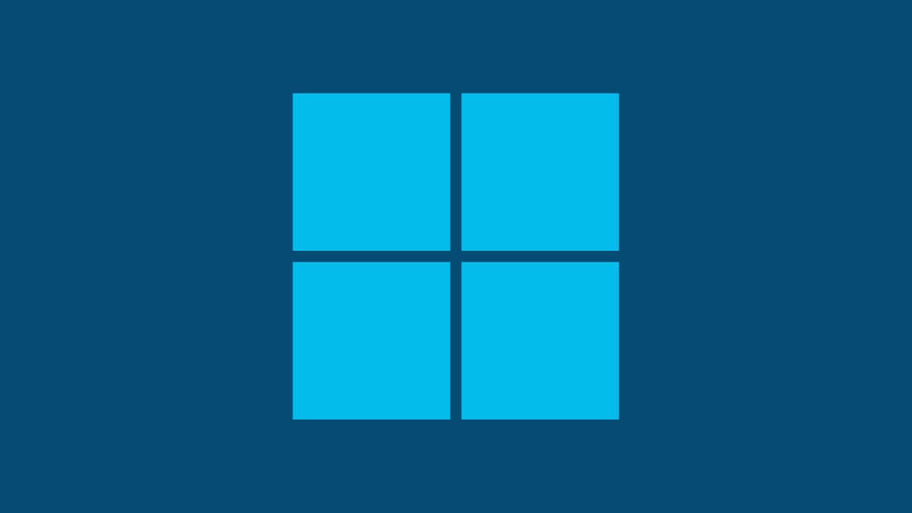
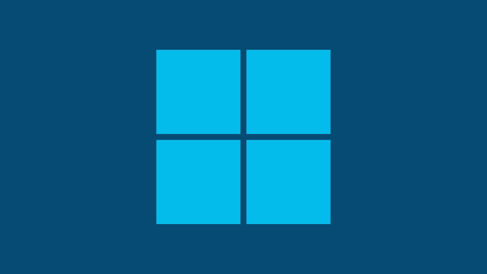

Programové vybavení (software) je podmínkou využití technického vybavení (hardware). V raných dobách počítačové éry byly programy vytvářeny vždy pro konkrétní hardware. V okamžiku, kdy počítače začaly být produkovány ve větších sériích, objevila se i potřeba vývoje speciálních systémových programů, které by obstaraly základní operace s hardwarem a nabídly prostředí pro běh aplikací, tj. programů určených pro konkrétní účely.
Základním programovým vybavením počítačů (a jim podobných zařízení) jsou operační systémy (OS - Operation System). Jejich nejdůležitější funkcí je zajištění řízení hardware. To má na starosti jádro systému, které tvoří subsystémy pro správu procesoru, paměti, diskových médií a dalších zařízení. Jádro pro své operace vyžaduje instalaci ovladačů jednotlivých zařízení (drivers) a s jejich pomocí zpřístupňuje technické vybavení běžícím procesům
Nezbytnou součástí operačních systémů je aplikační rozhraní (API - Application Programming Interface), které nabízí programátorům prostředky pro vývoj aplikací pro daný systém. Uživatelské rozhraní slouží k ovládání OS a k spouštění aplikací. Zatímco starší OS se ovládaly častěji prostřednictvím příkazového řádku (CLI - Command Line Interface), moderní systémy poskytují grafické uživatelské rozhraní (GUI - Graphic User Interface) založené na oknech a grafických prvcích.
a počátku vývoje moderních OS byl víceúlohový a víceuživatelský systém UNIX, který se od 70. let používal v sálových počítačích i minipočítačích. Jeho principy využily i další OS. V 80. letech minulého století si vzájemně konkurovaly systémy firmy Microsoft (MS DOS), instalované na počítačích IBM PC, a firmy Apple (Mac OS), která rozvinula myšlenky vývojářů společnosti Xerox a začala jako první používat grafické uživatelské rozhraní. To se stalo také základem MS Windows, jenž hrál prim především na přelomu tisíciletí. V té době už získával stále větší popularitu volně šiřitelný systém Linux, pojmenovaný podle svého tvůrce Linuse Torvaldse a staršího vzoru UNIXu. Zatímco operační systémy Windows dominují především na osobních počítačích v domácnostech i kancelářích, různé linuxové distribuce jsou velmi často instalovány na síťových serverech
současné OS rozdělujeme nejčastěji podle typů zařízení, pro která jsou určeny. Existují systémy pro síťové servery (např. MS Windows 2012 Server, Linux, Unix), pro běžné osobní počítače - desktopy, notebooky, netbooky (např. MS Windows, Linux Ubuntu, OS X), pro mobilní zařízení (Android, Symbian, Windows Phone, iOS) i speciální RTOS (Real-Time Operating System - systémy reálného času), které zajišťují provoz „chytrých“ zařízení, jakými jsou robotické kamery využívané pro sportovní přenosy, měřící přístroje na orbitálních stanicích nebo jednotky pro řízení různých průmyslových procesů. Zatímco u desktopového systému je možné pozdržet dokončení některých operací a provádět paralelně jiné operace, v případě RTOS je nezbytné provádět operace bez prodlevy a s vysokou spolehlivostí v reálném čase.
 

© 2022 - Ondřej Lampa IT1